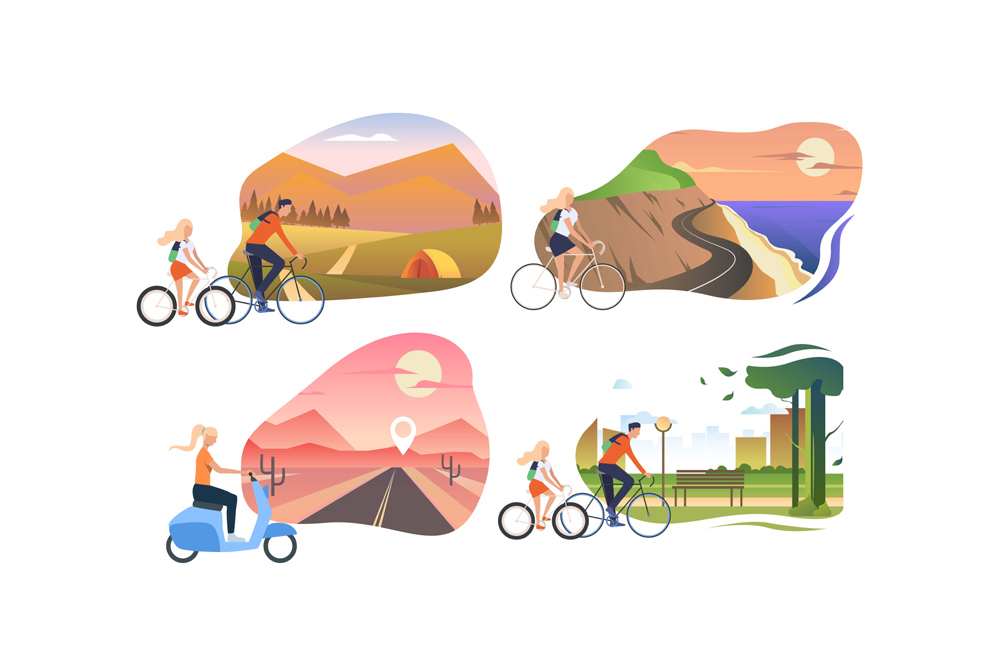

Sep 19, 2018

Travelling is a great way to gain exposure and get well acquainted with what life’s all about. It brings you a lot closer to who you are as a person and lets you explore new opportunities that can help you grow even more. Travelling is not just about moving between two destinations, it's about the journey and what you learn from it. There’s a quote by Rumi that says, “What you seek is seeking you”. There can be a number of ways of interpreting it, but the most elaborate one is that what a person is looking for is right there and is achievable if you wish to achieve it. This when integrated with travelling translates to the fact that there are a number of things to learn while on the journey the only question is do you want to learn those things?
Education and Learning are very important in a student's life. It is also important for them to be able to understand the things that they want to learn and the knowledge that is being imparted to them. The classical way of reading and writing to learn new things may not always be beneficial to each and every child. There are a number of different ways that can be inculcated in the studying curriculum so that the students can learn in a better and nun-mundane way.
There are a number of reasons to include travelling as a way of learning new things in the educational curriculum. Some of them are as mentioned,
1. Getting to learn new languages
2. Getting to learn about new cultures
3. Getting to learn about History
4. Learning about today’s world
5. Learning about nature
6. Learning social skills and many more
In order to provide better opportunities to students for learning and gaining new experiences in their lives, we at ASKMETRIP help Schools, Colleges and Educational Institutions to give their students a learning opportunity that is full of fun and non-traditional learning methods. We organise and manage a number of trips that can prove to be beneficial in their learning stages. Wondering how you can inculcate new learning techniques for the benefit of the students? We at ASKMETRIP might have the answer for you. Feel free to contact us or visit our website for any further details. We’d be more than happy to help you choose a new learning technique for your students.
written by :